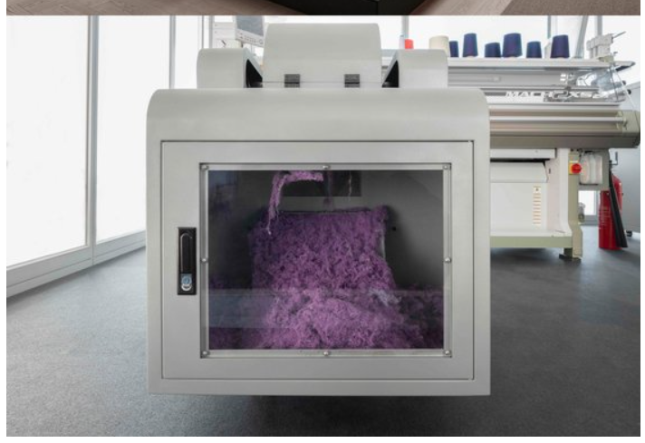

U
P
C
Y
C
L
E
새활용(-活用) 또는 업사이클은
부산물, 폐자재와 같은 쓸모 없거나 버려지는 물건을 새롭게 디자인해
예술적·
환경적 가치가 높은 물건으로 재탄생시키는 재활용 방식이다
즉, RECYCLE(재활용)의 진화된
Version이라고 할 수 있다.


몇가지 예시를 들자면
먼저, 폐섬유를 재가공하여 집을 만들어내는 기술이 있다.
그리고
폐섬유
를 이용해리싸이클링하여 새로운 의류용품을 만드는
쇼핑몰 또한 존재한다.(사진 클릭)
크오롱 Fnc가 주도하고있는 폐섬유를 분해하여 새로운 옷으로 만드는 기술 또한 개발되었다

또한 코로나 19로 인해 플라스틱 섬유로 구성되어 있는
마스크 폐기물이 인건비를 문제로 방치되던 것을 개선시킨 특별한기술도 있다.
솔직히 이렇게 기술들이 개발되어도 아직까지 상용화가 힘들고 다양하지 않은 것이 현실이긴 합니다만,
기술이 지속적으로 발전하고
우리가 우리 소비에 책임감을 가지고 소비활동을 하다보면
승산 없는 싸움이 아니게 될지도 모른다.
그럼 책임감을 가지고 현생을 살도록 하자!